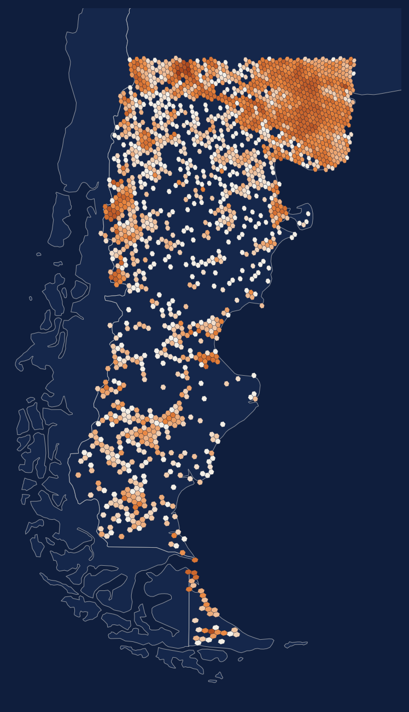
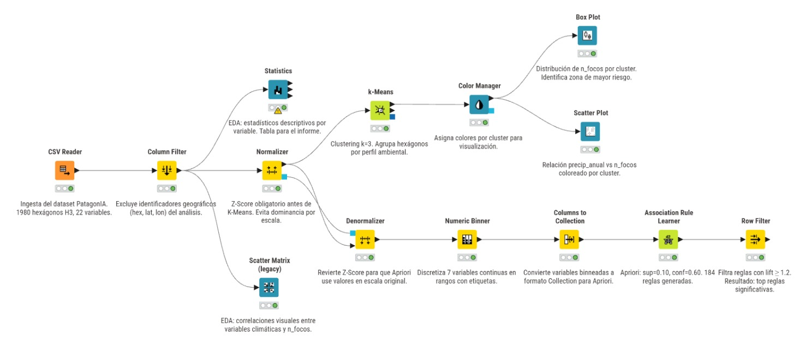
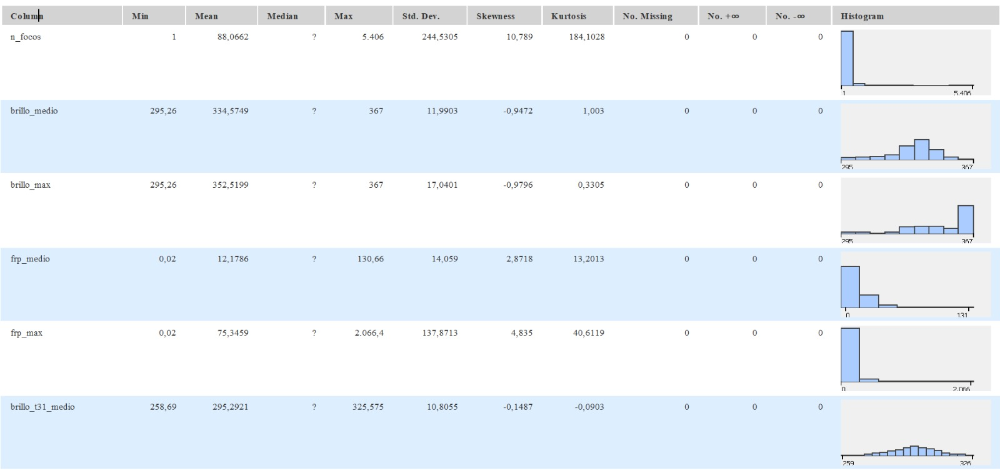
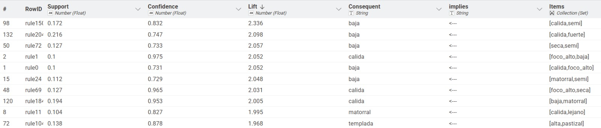

click o Esc para cerrar

mediante minería de datos
Minería de Datos y Big Data — UCA Rosario · 2026
de los incendios patagónicos son de origen humano (SNMF)
¿Qué perfiles ambientales caracterizan las zonas con mayor actividad histórica de incendios?
Enfoque inductivo y no supervisado: los patrones emergen de los datos, sin etiqueta a predecir.
Unidad de análisis: la zona = hexágono H3 (res. 5, ~253 km²), no el foco individual.

Z-Score obligatorio antes de K-Means (distancia euclidiana).
Discretización con etiquetas interpretables antes de Apriori.
Pocas zonas concentran casi todo el fuego.
Precipitación muy variable → gradiente este-oeste.
brillo_medio ↔ brillo_max casi colineales.

Baja precipitación, n_focos extremos (atípicos a Z=22).
Precipitación baja-media, actividad moderada de fuego.
Amplio rango de precipitación, n_focos consistentemente bajos.
El clustering reprodujo la tripartición ecológica clásica de la Patagonia sin usar etiquetas.
El fuego alto co-ocurre con un perfil cálido, seco y de baja elevación. Apriori mide co-ocurrencia, no causalidad.

Tres métodos independientes convergen en el mismo perfil de riesgo.
k = 3 por criterio de dominio (a validar con coef. de silueta).
Autocorrelación espacial entre hexágonos vecinos, no modelada.
Solo zonas con foco → sesgo de selección.
Base para el modelado predictivo supervisado de IA y Machine Learning.
Tres perfiles ambientales = unidades ecológicas reales de la Patagonia.
El fuego alto co-ocurre con el perfil cálido / seco / bajo (lift ≈ 2).
Dataset reproducible (1.980 × 22) → insumo directo para forecasting.
Priorizar zonas de monitoreo para el SNMF.